OKU-BENI.txt, tasarim/TEKNIK-NOT.md, tasarim/UC-KAMPUS-TEST-RAPORU.md ve tasarim/sinematik/FILMCRAFT-TESLIM-RAPORU.md belgelerinin derlenmiş hâlidir. Kaynağı tasarim/kilavuz/kilavuz.html; PDF yeniden üretimi için bkz. bölüm 17.Kaplan Arena, sınıflar ya da kampüsler arasında oynanan, tamamen yöneticinin kontrolünde ilerleyen bir bilgi yarışması uygulamasıdır. Kurulum gerektirmez; bir web tarayıcısında açılır. Yarışma üç pencereyle yürür:
| Pencere | Kim görür / ne yapar |
|---|---|
| Yönetim paneli | Yalnız yöneticinin bilgisayar ekranında. Bütün düğmeler buradadır: soruyu göster, cevabı açıkla, puanları göster, joker, iptal, ara, film. Süre ve puanın tek yetkilisi paneldir. |
| Sahne ekranı | Projeksiyonda seyircinin gördüğü pencere (yönetim düğmesi yok). Sorular, süre, doğru bilenler, puan tablosu, joker tanıtımları, açılış filmi. Bütün sesler yalnız buradan çalar. |
| Öğrenci telefonları | Takım/sınıf kaptanlarının telefonları. QR kod ya da 6 haneli kodla katılır, cevap ve joker gönderirler. Telefonlar ses ve video çalmaz. |
Yarışma üç etaptan oluşur: Orman Geçidi (1. etap) → Kadim Kale (2. etap) → Kaplan Arenası (final). Her etabın kendi soru bankası vardır; önerilen düzen etap başına 5 tahmin + 5 ders sorusudur. Ayrıca eşitlik durumları için yedek tahmin soruları tutulur.
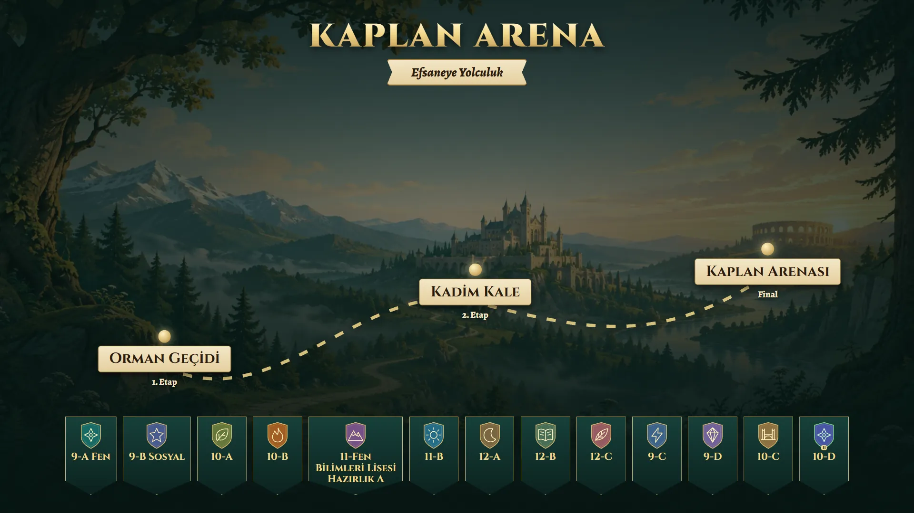
https://kaplan-arena.vercel.app adresini açın, yedeği içe aktarın, soru sayılarını kontrol edin.https://kaplan-arena.vercel.app adresini açın.| Yol | Ne zaman | Telefonlar |
|---|---|---|
| A) https://kaplan-arena.vercel.app | Önerilen. İnternet olan her bilgisayarda. | Herhangi bir ağdan (Wi-Fi, mobil veri) |
| B) kaplan-arena.html dosyasına çift tıklama | Klasör bilgisayardaysa. İnternet varsa telefonlar Vercel üzerinden bağlanır. | İnternet varsa her ağdan; yoksa telefonsuz |
| C) BASLAT.bat (yerel ağ modu) | İnternet yoksa. Bilgisayar küçük bir sunucu olur. | Yalnız aynı Wi-Fi'dan, ekrandaki yerel adresle |
Ek monitör gerekmez; projeksiyon ikinci ekran olur. Karşılama ekranında Sahne Ekranını Aç deyin. Tarayıcı açılır pencereyi engellerse adres çubuğundaki simgeden bu siteye izin verin. Sahnede Sesi Etkinleştir ve Test Et (ya da Sessiz Devam Et). Ses açma/kapatma ve seviye: panel → Ayarlar.
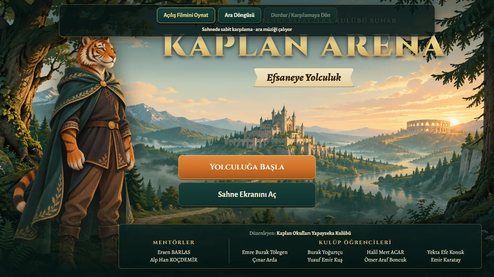
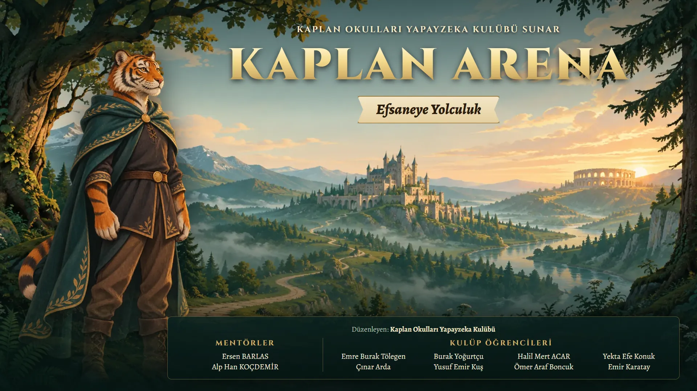
Sahne penceresi kapanırsa ya da bağlantı koparsa açık sorudaki süre ve cevap kabulü durur, panelde uyarı çıkar. Sahne Ekranını Aç ile yeniden açın; aynı soru ve kalan süre gelir, devamı siz başlatırsınız (Devam Et). Sahne olmadan sürdürmek için Sahnesiz Devam.
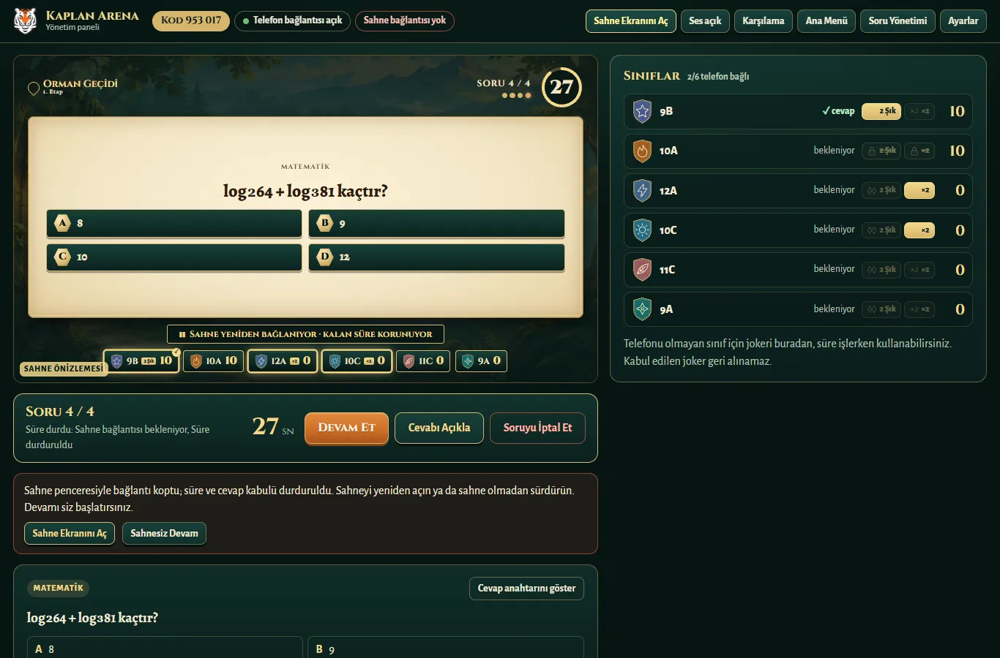
Mod, yeni yarışma başlatılırken Ayarlar'daki takım sayısına göre kendiliğinden seçilir ve o yarışmanın kaydına sabitlenir. Sonradan Ayarlar'da listeyi değiştirmek açık yarışmayı etkilemez; değişiklik bir sonraki yeni yarışmada geçerli olur. Ayarlar en az 3 benzersiz, boş olmayan ad ister.
| Üç Kampüs — Ortak Yarışma | İki Gruplu Turnuva | |
|---|---|---|
| Ne zaman | Ayarlarda tam 3 takım | 4 ve daha fazla sınıf |
| Kura | Yok; doğrudan ortak katılım | Liste kura ile iki etaba bölünür |
| Etaplar | Üç takım üç etabın tamamında birlikte | 1. grup Orman Geçidi, 2. grup Kadim Kale; final ayrı |
| Eleme | Yok | Her etabın ilk 2'si finale çıkar (toplam 4 finalist) |
| Puanlar | Başta sıfır; yeni soruda ve yeni etapta sıfırlanmaz, üç etap boyunca birikir | Her etap sıfırdan; finalde puanlar sıfırdan başlar |
| Şampiyon | Son etap sonunda en yüksek toplam | Final etabının birincisi |
| Eşitlik | Yalnız birincilikteki eşitlik; yalnız eşit liderlere yedek tahmin sorusu | Finale çıkış sınırında ve final birinciliğinde |
| Telefon sahipliği | Yarışma boyunca bir kez seçilir | Etap bazında kaydedilir (her etabın takımları farklıdır) |
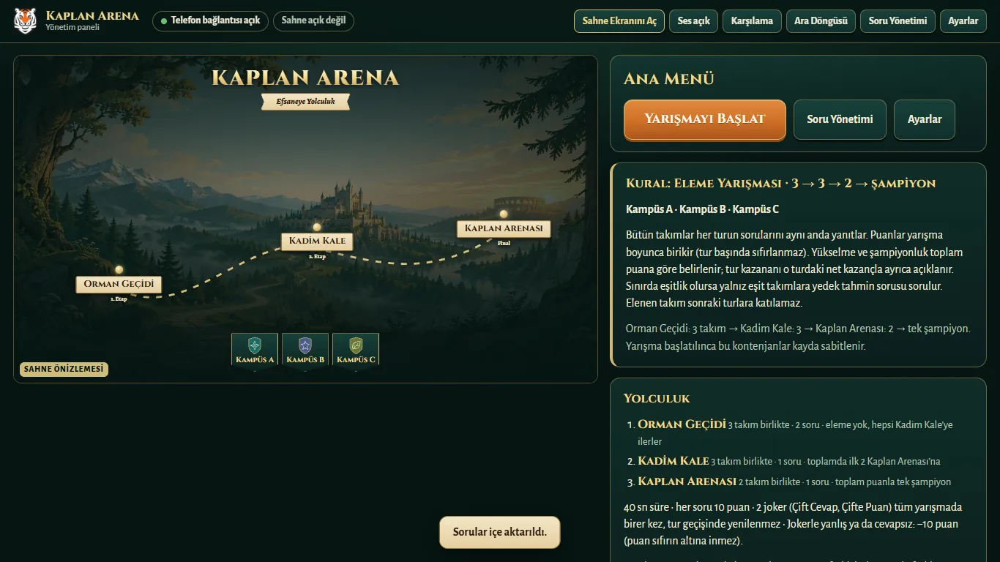
| Durum | Puan |
|---|---|
| Doğru cevap (şıklı) / en yakın tahmin | +10 |
| Çift Cevap jokeri, iki seçimden biri doğru | +10 |
| Çifte Puan jokeri, doğru | +20 |
| Jokerle yanlış ya da cevapsız | −10 (puan sıfırın altına inmez; 5 puanlı takımdan 5 düşer) |
| Jokersiz yanlış ya da cevapsız | 0 |
| İptal edilen soru | Kimseye puan/ceza yok; uygulanmış etki geri alınır |
Modu olmayan eski kayıtlar ve süren turnuvalar turnuva olarak açılır; ayardaki takım sayısına bakılmaz.
Her soru için paneldeki ana düğme sırayla şu adımları yapar. Hiçbir adım kendiliğinden ilerlemez.
| Adım | Sahne ve telefonlar | Not |
|---|---|---|
| 1. Hazır mısınız? | Soru sahneye ve telefonlara gitmez; "Hazır mısınız?" ekranı | Süre işlemez. Panelde soru ve cevap anahtarı görülebilir. |
| 2. Soruyu Göster | Soru açılır, ortak süre başlar | Duraklat / Devam Et kullanılabilir. |
| 3. Süre biter | "Süre doldu · cevaplar kilitlendi" | Doğru cevap kendiliğinden açılmaz. |
| 4. Cevabı Açıkla | Doğru şık/cevap ve Doğru Bilenler gösterimi | Süre bitmeden basılırsa onay sorulur. Panelde telefondan gelen cevaplara göre doğru bilenler işaretlenir; gerekirse düzeltin. Puanlar henüz görünmez. |
| 5. Puanları Göster | Puan tablosu, değişim animasyonu | Puan bir kez uygulanır; tekrar basmak çoğaltmaz. |
| 6. Sonraki Soru | Yeni sorunun "Hazır mısınız?" ekranı | Son soruda "Etap Sonucunu Göster". |
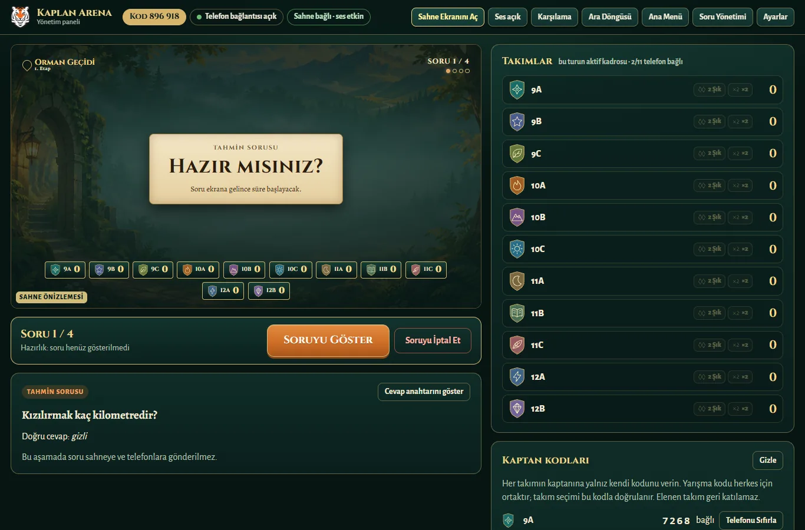
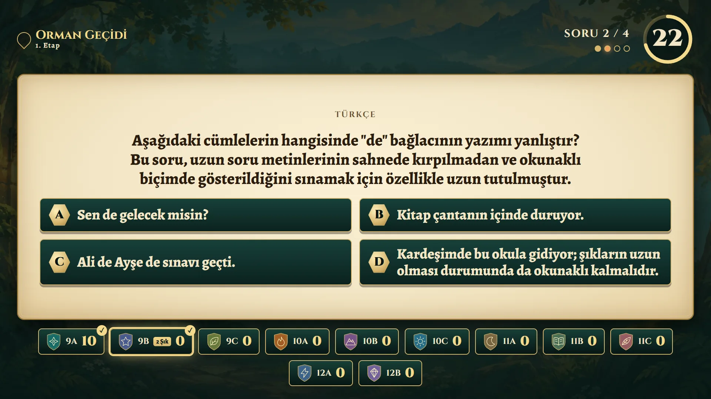
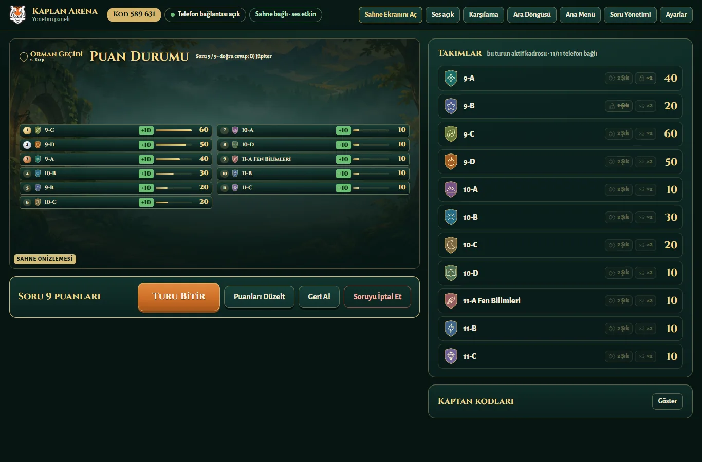
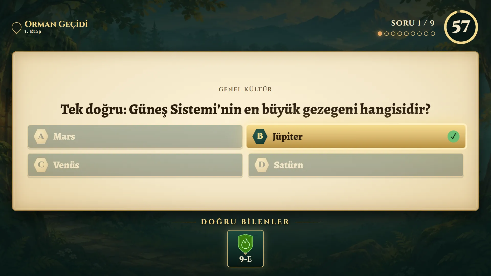
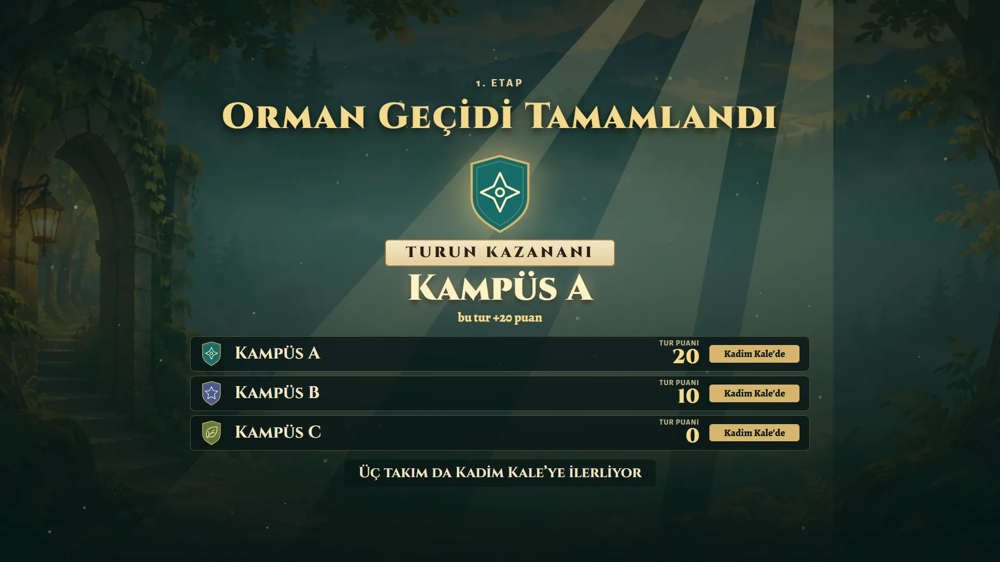
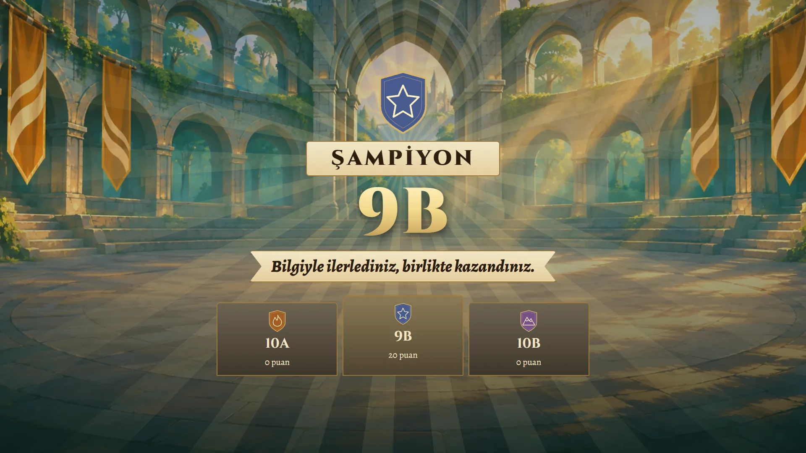
Her takımın bütün yarışma boyunca iki jokeri vardır; etap geçişinde ve finalde yenilenmez.
| Joker | Kullanım | Sonuç |
|---|---|---|
| Çift Cevap (2 Şık) | Yalnız şıklı soruda. İki farklı şık seçilir ve birlikte gönderilir. | Biri doğruysa +10; ikisi yanlışsa −10 |
| Çifte Puan (×2) | Şıklı ve tahmin sorusunda. | Doğruysa +20; yanlış/cevapsızsa −10 |
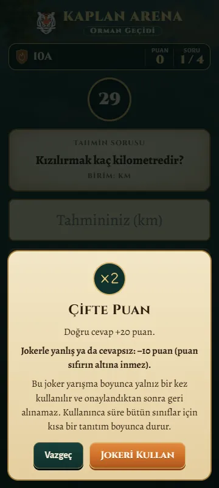
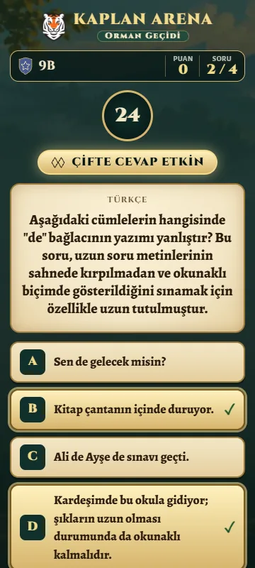
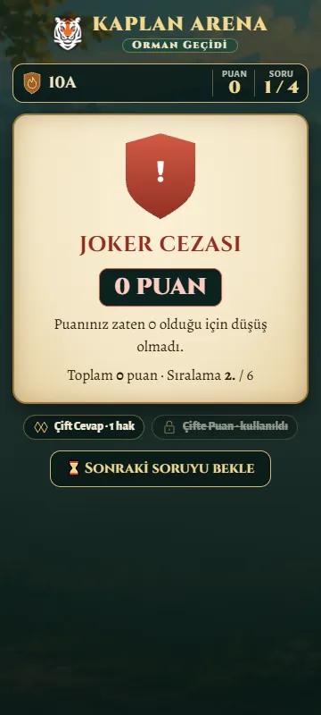
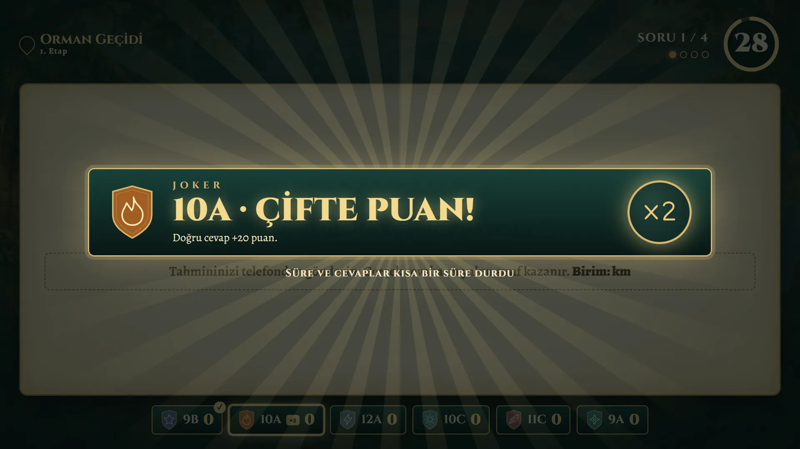
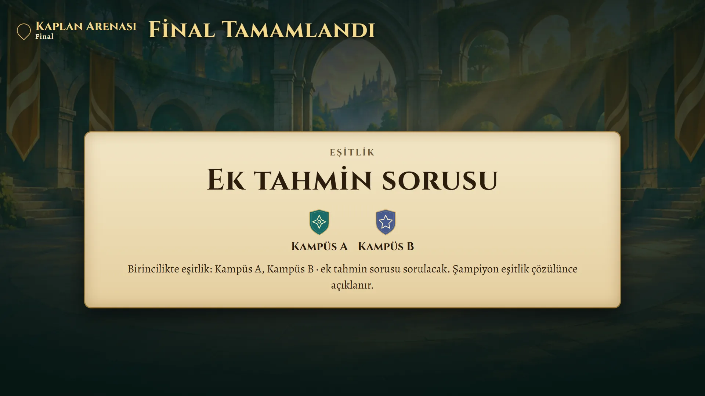
kaplan-arena.vercel.app/katil adresine gidip kodu girer.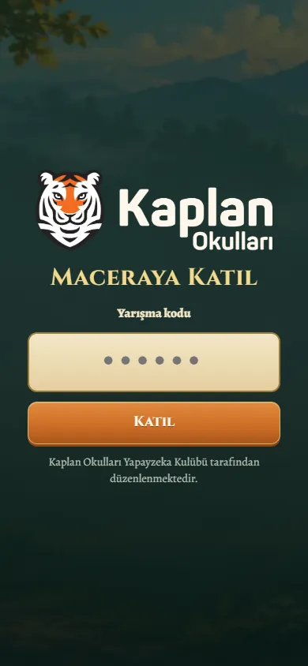
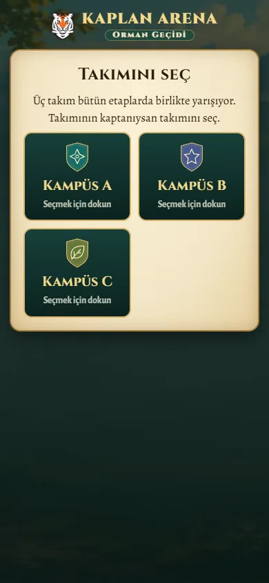
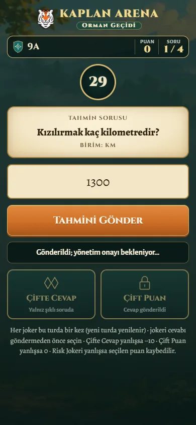
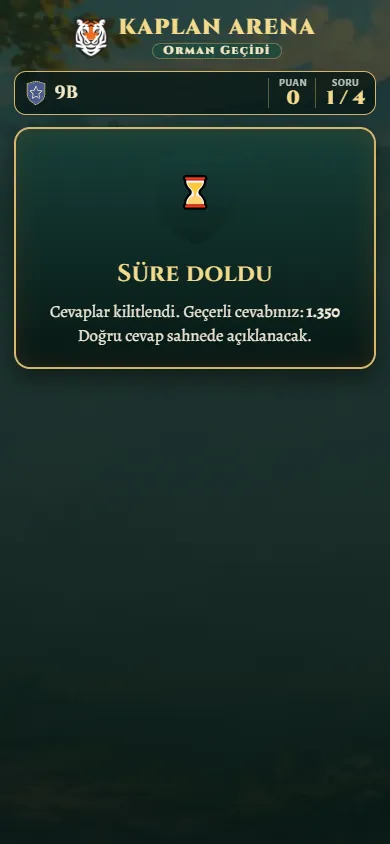
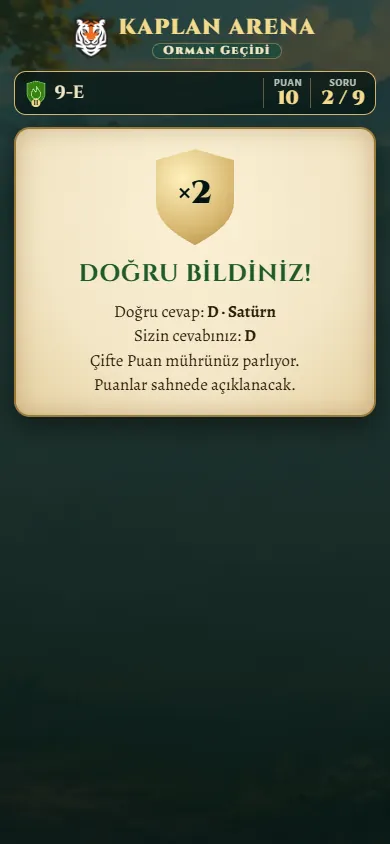
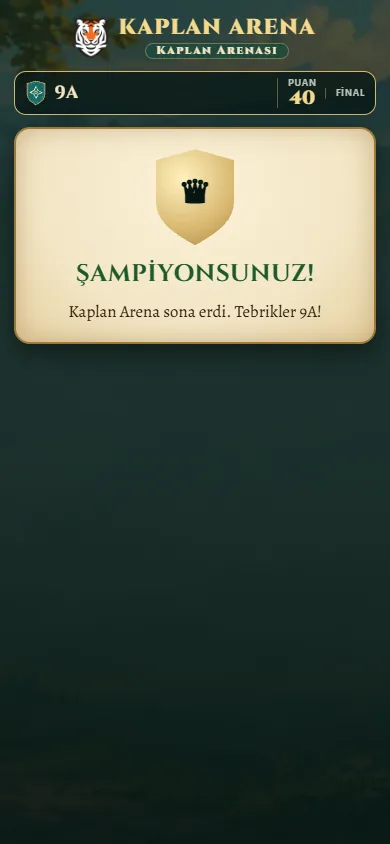
Karşılama ekranında panelde Sinematik kontrolleri bulunur; üst çubukta ayrıca Ara Döngüsü vardır.
| Düğme | Ne yapar |
|---|---|
| Açılış Filmini Oynat | 60 saniyelik açılış filmi sahnede, sesli. Döngüde oynar: ekranı değiştirene ya da Atla/Durdur'a basana kadar sürer. Paneldeki durum satırı kaçıncı turda olduğunu gösterir. |
| Ara Döngüsü | 30 saniyelik sakin arena görüntüsü ve müziği, kesintisiz döngü. Konuşma ve ara için. |
| Atla | Açılış filmini kapatır; sabit karşılama ve karşılama müziği. |
| Durdur / Karşılamaya Dön | Filmi kapatır, sabit karşılamaya döner. |
Karşılama ekranında film oynamıyorken sahne, ara döngüsünün müziğini kesintisiz çalar: yalnız sesi etkinleştirilmiş sahnede ve Ayarlar'da ses açıkken; seviye aynı ayardan. Film başlayınca müzik durur (iki ses üst üste çalmaz), film kapanınca kaldığı yerden sürer; karşılamadan çıkınca durur.
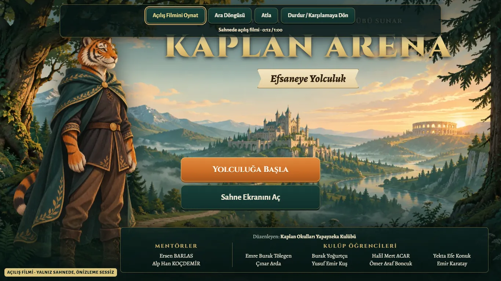
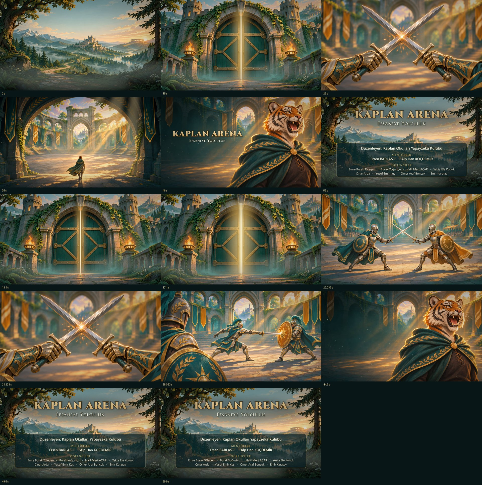
Üst çubuktan Soru Yönetimi. Dört sekme: 1. Etap, 2. Etap, Final, Eşitlik (Yedek). Her sekmede soru ekleme (+ Ders Sorusu, + Tahmin Sorusu), düzenleme, silme ve sıralama (↑ ↓) yapılır. Sorular bu sırayla sorulur. Özet satırı önerilen dağılımı (5 tahmin + 5 ders) gösterir.
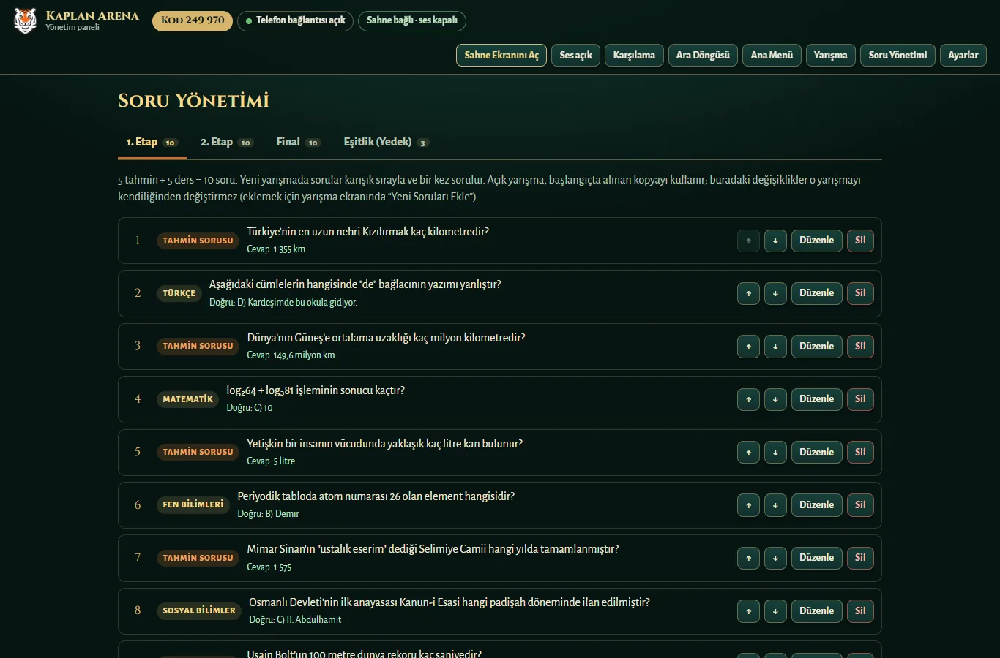
kaplan-arena-yedek.json İndirilenler klasörüne kaydedilir. İndirme çalışmazsa Kopyala deyip metni bir metin dosyasına yapıştırın (.json ya da .txt).Yedekte bütün sorular ve ayarlar (yarışma adı, soru süresi, takım/sınıf listesi) vardır. Açık yarışmanın puanları ve jokerleri yedeğe girmez.
https://kaplan-arena.vercel.app).Takım listesi hatalı bir yedek (2 ya da daha az takım, aynı ad iki kez) bütünüyle reddedilir; mevcut veriler değişmez. Yarışma sürerken yedek yüklemek o yarışmanın takımlarını değiştirmez.
Örnek sorular: Ayarlar → Sıfırlama → "Örnek Soruları Geri Yükle" (mevcut soruları siler). Eski sürümden gelen kayıt ilk açılışta otomatik güncellenir; eski kaydın kopyası tarayıcıda kaplan-arena-v1-yedek-sema1 adıyla saklanır.
| Ayar | Açıklama |
|---|---|
| Yarışmanın adı | Panel ve telefonlarda görünür (en çok 60 karakter). |
| Takımlar / sınıflar | Her satıra bir ad (virgül de ayırır; fazla boşluklar temizlenir). En az 3 benzersiz ad; büyük/küçük harf farkı aynı ad sayılır. Tam 3 → Üç Kampüs ortak yarışma; 4+ → iki gruplu turnuva. Altındaki satır kayıtlı listeyle yeni yarışmanın modunu gösterir. Değişiklik açık yarışmayı etkilemez. |
| Soru süresi | 5–600 saniye (varsayılan 45). |
| Sahne sesleri | Joker, son saniyeler, süre sonu, kutlama, film ve karşılama müziği. Yalnız sahneden çalar. |
| Ses seviyesi | 0–100. Film ve müzik dahil bütün sahne sesleri. |
| Hareketleri azalt | Animasyonlar ve açılış filmi kapanır (işletim sistemi tercihi de dikkate alınır). |
| Sahnede Ses Testi | Etkin ses sahnesine test sesi gönderir. |
| Sıfırlama | Örnek soruları geri yükleme ya da tüm verileri silme (onaylı, geri alınamaz). |
Her takımın arması kalıcıdır; yeni ad eklemek mevcut armaları değiştirmez, yeni ad boş bir arma alır.
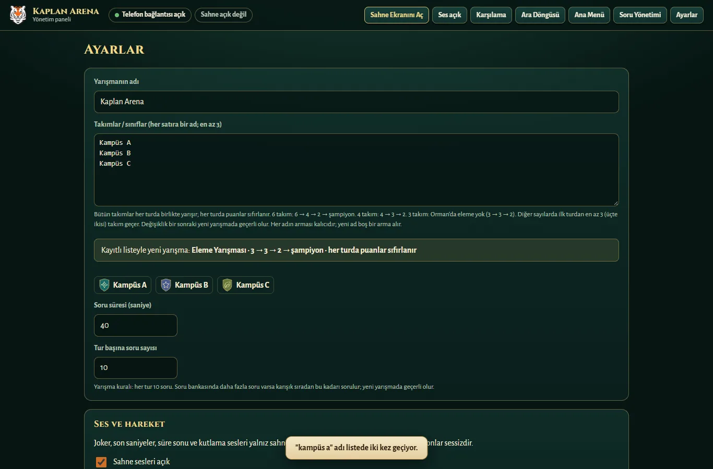
Vercel adresi ya da kaplan-arena.html. Telefonlar Wi-Fi ya da mobil veriyle kaplan-arena.vercel.app/katil adresinden katılır. Farklı şehirlerdeki kampüsler aynı yarışmaya katılabilir.
BASLAT.bat'a çift tıklayın, izin sorusuna Evet deyin (güvenlik duvarı izni).192.168.1.25:8090) ve kodla katılır. Birden fazla ağ adresi varsa panelde seçilebilir.İnternet ve yerel sunucu yoksa yarışma tek bilgisayarla oynanır; panelde "Telefon bağlantısı yok" yazar. Cevapları (doğru bilenler, tahminler) ve jokerleri yönetici panelden girer.
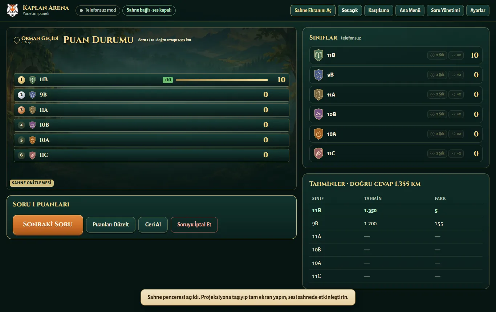
İnternet modunda aynı anda yalnız bir yarışma yürütülebilir. Başka bir yerden yönetim paneli açılıp yarışma başlatılmak istenirse "Şu anda başka bir yerde açık bir yarışma var" uyarısı çıkar ve açık panele bildirim gider. Yarışma bitince ya da açık panel 5 dakika kapalı kalırsa kilit kendiliğinden kalkar. Sahne penceresi kilit almaz.
Klasör bütün olarak taşınmalıdır: kaplan-arena.html, app/ ve assets/ birlikte olmalı.
| Cihaz | Gereksinim |
|---|---|
| Yönetim bilgisayarı | Güncel Chrome ya da Edge. İnternet. Açılır pencerelere izin. Soruların yedeği içe aktarılmış olmalı (bölüm 10). |
| Sahne / projeksiyon | Aynı bilgisayarın ikinci ekranı (Win + P → Genişlet). Hoparlör bağlı. "Sesi Etkinleştir" bir kez tıklanmalı (tarayıcı ses izni). |
| Telefonlar | Herhangi bir güncel tarayıcı; uygulama kurulmaz. Okul Wi-Fi'ı, mobil veri ya da başka kampüsün ağı fark etmez (internet modunda). |
| Ağ | kaplan-arena.vercel.app erişilebilir olmalı (okul güvenlik duvarı engellememeli). Açılış filmi 48 MB, ara döngüsü 11 MB: indikçe oynar. |
| Belirti | Çözüm |
|---|---|
| Sahne penceresi açılmıyor | Tarayıcı açılır pencereyi engelledi. Adres çubuğundaki simgeden bu siteye izin verip Sahne Ekranını Aç'ı tekrarlayın. |
| Ses / müzik gelmiyor | Sahnede "Sesi Etkinleştir" tıklandı mı? Ayarlar'da "Sahne sesleri" açık ve seviye > 0 mı? Windows ses çıkışı projeksiyon/hoparlör mü? Panelin üst çubuğundaki çip "Sahne bağlı · ses etkin" demeli. |
| Eski açılış filmi oynuyor | Panel ve sahne penceresini yenileyin (F5). Video adresleri sürüm ekliyle değişir; tarayıcı önbelleği 24 saattir (bkz. bölüm 17). |
| Film oynamıyor, sabit karşılama | Hareketleri azaltma açık olabilir; ya da video yüklenemedi (ağ). Sabit karşılama bilinçli yedektir; yarışma etkilenmez. |
| Telefon "Bu kodla açık bir yarışma bulunamadı" | Kod doğru mu? Yarışma başlatıldı mı? Yerel ağ modunda telefon aynı Wi-Fi'da mı? |
| Telefon "Bağlantı yok · yeniden bağlanılıyor" | Ağ geçici koptu; kendiliğinden yeniden bağlanır. Gönderilen cevaplar korunur. |
| "Başka bir yerde açık bir yarışma var" | Tek yarışma kilidi. Diğer paneli bulup yarışmayı bitirin ya da 5 dakika bekleyin. Kilitli olan bu cihazdaki eski yarışma ise panelde Bu cihazdaki eski yarışmayı kapat düğmesi vardır; Tekrar Kontrol Et ile kilit yeniden sorgulanır. |
| Sorular kayboldu | Farklı bilgisayar/tarayıcı/adres açılmış olabilir. Yedeği içe aktarın (bölüm 10). |
| Ayarlar "En az 3 benzersiz takım/sınıf adı girin" | Listede 3'ten az ad var ya da bir ad iki kez yazılmış. |
| Süre başlamıyor | Duraklama nedeni var: joker tanıtımı (bitince devam eder), sahne kaybı, ara. Panelde nedeni yazar; Devam Et. |
| Yanlış takıma puan verildi | Puan ekranında Geri Al ya da Puanları Düzelt (±10). Hatalı soru için Soruyu İptal Et. |
| BASLAT.bat sonrası telefonlar bağlanamıyor | Güvenlik duvarı izni verildi mi? Panelde diğer ağ adresini deneyin. Okul Wi-Fi istemci yalıtımı yapıyorsa telefon erişim noktası kullanın ya da internet moduna geçin. |
Uygulama derleme adımı olmayan saf HTML/CSS/JavaScript'tir; aynı dosyalar file://, PowerShell yerel sunucusu ve Vercel'de değişmeden çalışır. Telefon senkronu için tek bir sunucu fonksiyonu (api/ka.js) ve Upstash Redis kullanılır.
| Yol | Görev |
|---|---|
index.html, kaplan-arena.html | Kabuk: meta, QR kütüphanesi, modül yükleme. Çift tıklamayla açılır. ?sahne → sahne; ?pin/?katil → telefon; diğer → yönetim. |
app/core.js | DOM'suz saf mantık (UMD; Node testleri require eder): puan/ceza, saat ve cevap pencereleri, cevap/joker doğrulama, iptal, armalar, kayıt göçü, takım listesi doğrulaması, yarışma modları, etap sonucu. |
app/shared.js | Ortak tanımlar: etaplar, örnek sorular, joker metinleri, CINE (video yolları + sürüm eki), yedek doğrulama, kalıcı kayıt. |
app/admin.js, admin-actions.js, admin-ui.js | Yönetim paneli: yetkili yarışma durumu ve saat sahibi, eylemler, arayüz, sahne modeli, telefon durumu yayını. |
app/stage.js, stageview.js | Sahne penceresi: salt görüntüleyici; model çizimi, yerel geri sayım, Doğru Bilenler/puan animasyonları, sinematik video katmanı ve karşılama müziği. |
app/player.js | Öğrenci telefonu: komut istemcisi (cevap, joker isteği), kabul/ret durumunu admin yayınından okur. |
app/net.js | Ağ katmanı (yoklama tabanlı KV istemcisi), web/LAN/telefonsuz algılama, tek yarışma kilidi. |
app/link.js | Yönetim ↔ sahne pencere iletişimi. |
app/audio.js | Web Audio ile çevrimdışı sahne sesleri (joker, tik, süre sonu, kutlama). |
app/style.css | Bütün görünüm ("Gece Arenası" tasarımı). |
api/ka.js | Vercel sunucu fonksiyonu: KV get/set ve kilit; Upstash Redis. |
kaplan-sunucu.ps1, BASLAT.bat | İnternetsiz yerel ağ sunucusu (PowerShell HttpListener; aynı /api/ka protokolü, bellek içi). |
assets/ | Fontlar (Cinzel, Alegreya, Alegreya Sans; gömülü kopya), görseller, armalar, joker simgeleri, sinematik videolar. |
tests/ | Birim testleri ve tests/e2e/ tarayıcı senaryoları. |
tasarim/ | Tasarım, raporlar, sinematik kaynaklar ve FilmCraft projeleri (Vercel'e dağıtılmaz). |
t) bu sorunun açık penceresi içinde (±250 ms tolerans), biçimi geçerli, gönderen cihaz takımın sahibi. Geçerli gönderimlerin en sonuncusu sayılır; açıklamada dondurulur.scored[qk] ile bir kez uygulanır; iptal cancelled[qk] ile bir kez işlenir; aynı joker isteği ikinci kez işlenmez.Saat { total, left, runAt, reasons[] } biçimindedir. Yalnız soru açıkken, duraklatma nedeni yokken ve süre kalmışken çalışır. Nedenler: admin (elle/yeniden yükleme), joker (tanıtım), stage (sahne kaybı), break (karşılama/film). Bir neden kalkınca diğerleri sürüyorsa saat başlamaz. Sayfa yeniden açılınca çalışan saat durdurulur; devamı admin verir.
Sahne, panelden kullanıcı tıklamasıyla window.open(…?sahne) ile açılır. Birincil yol postMessage: sahne her saniye panele ping gönderir; panel her değişimde temizlenmiş sahne modelini gönderir. HTTP altında BroadcastChannel yedeği vardır. 3 saniye ping gelmezse sahne kayıp sayılır. Sahne modeli yönetim verisi içermez: hazırlıkta soru yok, doğru cevap yalnız açıklamadan sonra.
kaplan-arena-v1, şema 2)S = { schema: 2,
settings: { title, seconds, sound, volume, reduceMotion, classes[], lanIp, emblems{ad: n} },
questions: { s1[], s2[], final[], tie[] }, // {id, type:'ders'|'tahmin', text, options?, answer, unit?}
game: {
started, finished, pin, view, stage, qIndex, phase, // phase: ready|open|locked|revealed|cancelled
mode: 'shared'|'tournament'|undefined, roster[], // başlangıçta sabitlenir
teams: { s1[], s2[], final[], all[] }, // all: ortak yarışmanın tek puan kaynağı
clock{}, win[[başla,bitir]], jokers{ad:{double,x2}}, jdone{}, jrej{},
scored{qk:{delta,jk,winners}}, cancelled{qk:{reverted,refund}}, frozen{qk:{i:{v,t}}},
result, tie, history[], intro, evId, events[], brk } }
Soru anahtarı qk = <etap>_<sıra>_<soruId> (eşitlikte tie_<etap>_<tur>); etap anahtarını içerdiği için cevaplar etaplar arasında karışmaz.
/api/ka)Panel ve telefonlar aynı adrese POST atar (gövde JSON, Content-Type: text/plain):
{"fn":"get","pins":["123456"],"since":0} → {"t":<ms>,"rows":[{pin,p,v,r}]}
{"fn":"set","pin":"123456","path":"state","value":{…}} → {"r":<rev>}
{"fn":"lock","op":"check|acquire|release","host":"<id>",…} → {"t","state":"free|mine|other","info"}
| KV yolu (games/<pin>/…) | İçerik |
|---|---|
state | Panelin yayınladığı telefon durumu (görünüm, soru, süre bitişi, kabul edilen cevaplar, joker durumları, mod, pk). |
answers/<qk>/<i>/<sid> | Telefon cevabı {v, t, dev}; her gönderim ayrı anahtar. |
jreq/<qk>/<i> | Joker isteği {j, t, dev}. |
players/<pk>/<i> | Cihaz sahipliği {dev}. pk turnuvada etap anahtarı, ortak yarışmada all (etap geçişinde korunur). |
meta, alert | Yarışma bilgisi; tek yarışma kilidi uyarısı. |
<rev>|<json>). İstemciler ~0,4 sn aralıkla since revizyonundan sonrasını yoklar.| Öğe | Değer |
|---|---|
| Kaynak deposu | github.com/ersenbarlasai/kaplan-arena, dal main |
| Canlı adres | https://kaplan-arena.vercel.app · telefon: /katil |
| Dağıtım | main'e her push'ta Vercel otomatik dağıtır (ayrıca elle dağıtım gerekmez). |
| Veri deposu | Vercel → Storage → Upstash for Redis (ortam değişkenleri KV_REST_API_URL, KV_REST_API_TOKEN). Gizli anahtarlar depoya konmaz (.env* yok sayılır). |
| Dışlananlar | .vercelignore: tasarim/, tests/, BASLAT.bat, kaplan-sunucu.ps1, OKU-BENI.txt (yayına gitmez). |
| Önbellek | vercel.json: *.html ve /app/ önbelleklenmez; /assets/ 24 saat önbelleklenir. |
assets/sinematik/ altına aynı adla koyun ve app/shared.js'teki CINE_V değerini artırın. Aksi hâlde tarayıcılar 24 saat boyunca eski videoyu önbellekten oynatabilir.app/net.js içindeki VERCEL_URL satırını güncelleyin.tasarim/kilavuz/kilavuz.html düzenlenir; node tasarim/kilavuz/pdf-uret.js (puppeteer-core ve Chrome gerekir) tasarim/KAPLAN-ARENA-KILAVUZ.pdf dosyasını yazar.localStorage) tanınır.Açılış filmi ve ara döngüsü, OpenArt'ta üretilmiş hareketli video kliplerinden FilmCraft 0.20.1 ile kurgulandı; miks ve son dışa aktarım FilmCraft'tadır.
| Çıktı | Özellik |
|---|---|
acilis-60sn.mp4 | 60,000 s / 1800 kare, H.264 1920×1080, 30 fps, ~6,1 Mbit/s; AAC 48 kHz 320 kbit/s; −16,1 LUFS, −1,4 dBTP; 48,2 MB |
ara-30sn-loop.mp4 | 30,000 s / 900 kare, H.264 1920×1080, 30 fps; AAC 44,1 kHz (ses tam 30,000 s); −20,0 LUFS; 11,3 MB; kesintisiz döngü |
| Süre | Sahne | Not |
|---|---|---|
| 0–6 | Dünya keşfi | Siyahtan açılış |
| 6–12 | Kaplanın yolculuğu | Çapraz geçiş |
| 12–18 | Kale kapısı | %85 hız; kapı aralanır, kapanmadan kesilir |
| 18–24 | Turnuva karşılaşması | Kılıçlar 20,208 s'de kesişir |
| 24–27 | Kılıç teması (yakın plan) | Kesme temas anında; kıvılcım 25,65 s |
| 27–31 | Kalkan teması | Kalkan 28,000 s; ikinci çarpışma 30,750 s |
| 31–38 | Arenaya giriş | Kesme + savurma sesi |
| 38–44 | Arena ihtişamı | Çapraz geçiş |
| 44–48 | Kaplan kükremesi | Kükreme 44,033 s; çene açık 44,0–46,9 s |
| 48–60 | Final: başlık, logo, künye | Künye 49,4–60 s tam okunur |
cd tasarim/sinematik/filmcraft node kur.js acilis # .fcproj kurar, göreli yollar, medya çevrimiçi doğrulaması node kur.js ara bash disa-aktar.sh # FilmCraft export (--allow-offline kullanılmaz) python -P dogrula.py # ölçüm: decode, süre, LUFS/dBTP, efekt belirginliği, döngü node sfx-senkron.js # temas senkronu node dongu-oynat.js # ara döngüsü 3 tur gerçek oynatım (puppeteer-core) node poster.js # ara posteri
Ayrıntı: tasarim/sinematik/FILMCRAFT-TESLIM-RAPORU.md. Kaynak klipler ve üretim kayıtları: tasarim/sinematik/videolar-openart/.
Depoda package.json yoktur. Birim testleri Node ile, tarayıcı senaryoları Chrome + puppeteer-core ile çalışır (puppeteer-core depo dışında kurulur ve NODE_PATH ile gösterilir). Senaryolar canlı Redis/Vercel'e istek göndermez; tests/e2e/server.js bellek içi /api/ka ile çalışır.
node --test tests/core.test.js NODE_PATH=<puppeteer-core node_modules> node tests/e2e/run.js NODE_PATH=<…> node tests/e2e/modes.js NODE_PATH=<…> node tests/e2e/correct.js NODE_PATH=<…> node tests/e2e/uckampus.js NODE_PATH=<…> node tests/e2e/media.js
| Paket | Kapsam | Son sonuç |
|---|---|---|
Birim (core.test.js) | Puan/ceza tablosu, saat ve pencereler, cevap seçimi, joker kabul/ret, iptal, göç, takım listesi, modlar, etap sonucu | 22/22 |
run.js | Ana akış: 11 sınıf turnuva, sahne, iki telefon, jokerler, duraklama, kilit, iptal, uzun adlar | 65/65 |
modes.js | file:// internetsiz, PowerShell yerel ağ sunucusu, güvenlik | 30/30 |
correct.js | Doğru Bilenler gösterimi, animasyon ve ses tekilleştirme | 39/39 |
uckampus.js | Üç kampüs: ayarlar/yedek doğrulaması, gerçek başlatma, üç telefon, üç etap birikim, joker, iptal/geri al, eşitlik, yenileme, eski kayıt, 4 takım turnuva, file:// | 63/63 |
media.js | Sinematik: sahnede sesli oynatım, açılış döngüsü, karşılama müziği, Atla/Durdur, ortak duraklatma, yenileme, eksik dosya, reduced motion, file://, PowerShell Range | 53/53 |
Test sonuç kayıtları: tests/e2e/son-rapor*.json. Ekran görüntüleri: tasarim/ekran-goruntuleri/.
| Öğe | Kaynak / lisans |
|---|---|
| Yazı tipleri | Cinzel, Alegreya, Alegreya Sans — SIL Open Font License 1.1 (assets/fonts/OFL-*.txt) |
| Video klipleri | Kullanıcının OpenArt hesabında üretildi (tasarim/sinematik/videolar-openart/uretim-manifest.json: istemler, kimlikler, SHA256) |
| Müzikler | Kullanıcının Suno oturumunda üretilen iki parça (tasarim/sinematik/girdiler/MUZIK-TESLIMI.md) |
| Efekt sesleri | Metal/kapı/zincir/savurma: BigSoundBank ve Freesound CC0 kaynaklarından foley (ses-gercek/KAYNAK-LISANS.md). Gerçek düello kaydı değildir. |
| Kükreme | Kullanıcının sağladığı dosya; kaynağı/lisansı belgelenmemiştir, CC0 değildir. |
| Logo | Kaplan Okulları resmî logosu (değiştirilmeden) |
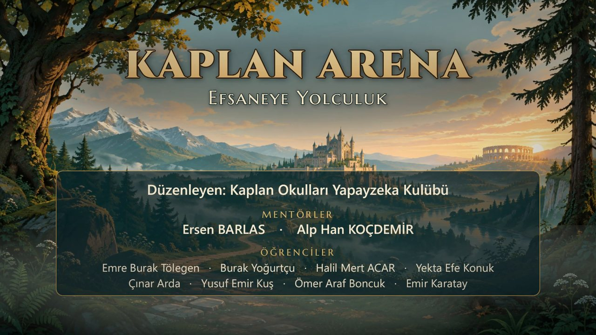